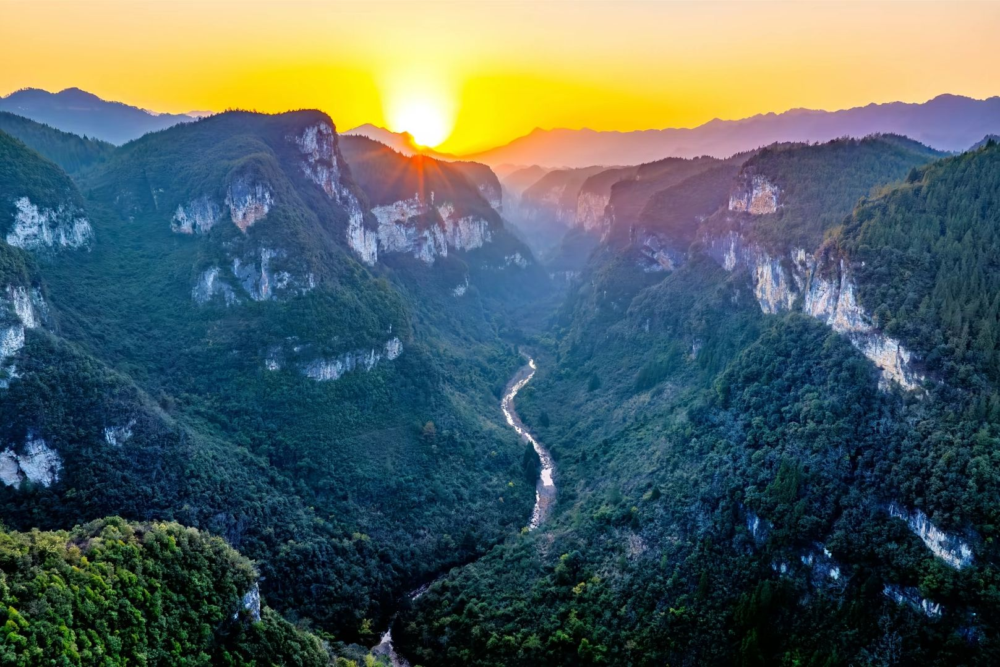

国家级风景名胜区 · 七曜山深处的秘境 · 渝东小九寨
潭獐峡位于重庆市万州区东南部梨树乡与地宝乡交界处，是七曜山脉的一段石灰岩峡谷，国家级风景名胜区。峡谷全长约21公里，核心区域面积67平方千米，由将军峡、天王峡、桃园峡、地缝峡、海螺峡五条支峡组成，一峡五谷，姿态各异，被誉为“渝东小九寨”。
潭獐峡之名源于峡中水潭密布、獐子出没的自然野趣。这里地势险峻，两岸峭壁林立，最高峰太平山海拔1127米，峡谷垂直切割深度达500米以上。峡内溪流终年不断，水质清澈见底，数十个形态各异的深潭散落其间，夏季均温仅22℃，是远离城市喧嚣的避暑天堂和探险胜地。
峡谷总长
核心面积
支峡组成
夏季均温
潭獐峡由五条各具特色的支峡组成，分布着将军峡、天王峡、桃园峡、地缝峡、海螺峡等37处主要景点，以“麒麟峡”为核心的峡谷群呈现出一幅天然山水画卷。
峡谷险峻雄奇，因崖壁如将军列阵而得名，是五峡中最壮阔的一段。
以高耸的石柱和飞瀑流泉著称，溪水蜿蜒曲折，气势磅礴。
谷内植被茂密，春季野花盛开，如世外桃源般清幽宁静。
两侧绝壁夹峙，仅露一线天光，最窄处仅容一人侧身通过。
谷形盘旋如海螺，潭水碧绿深邃，回声悠扬，别具趣味。
潭獐峡的核心景观段，集深潭、瀑布、绝壁于一体，是整条峡谷的灵魂所在。
五峡首尾相连，徒步全程需4-6小时，沿途潭瀑相间，步步皆景。
潭獐峡属典型的石灰岩峡谷地貌，经过亿万年流水侵蚀和地壳抬升，形成了深切的V形峡谷和众多溶蚀景观。峡内岩层裸露，石笋、石柱、溶洞等喀斯特地貌随处可见，是渝东北地区保存最完好的原生态峡谷之一。
峡谷中段有一处名为“千层岩”的绝壁，层层叠叠的岩层纹理清晰，如同一部打开的地质史书，诉说着数亿年的沧海桑田。游客在徒步过程中，还能看到多处天然形成的“石门”“石窗”，穿行其间宛如进入一座天然的石雕艺术馆。
潭獐峡地处七曜山脉腹地，森林覆盖率极高，保持着近乎原始的生态环境。峡内植被茂密，生长着楠木、银杏、红豆杉等多种珍稀植物，还有獐子、野猪、猕猴、锦鸡等野生动物栖息其间。春天杜鹃盛开，秋天红叶满山，四季景色各有不同。
最让人心旷神怡的是峡中数十个天然深潭，潭水清澈见底，碧绿如翡翠。夏季溯溪而上，脚踩清凉的溪水，抬头便是遮天蔽日的原始林木，空气中负氧离子含量极高，是一次彻底的身心洗礼。正因这份原始的野趣，潭獐峡被户外爱好者誉为“渝东最后的秘境”。
潭獐峡是目前渝东北地区最受户外爱好者青睐的徒步溯溪线路之一。从峡口进入，沿溪流而上，全程约需4-6小时。途中需要多次涉水过溪，攀爬岩壁，对体力和装备有一定要求，建议结伴而行并聘请当地向导。
夏季水量充沛时，是潭獐峡溯溪的最佳季节。穿着溯溪鞋，沿着清澈见底的溪流逆流而上，清凉的溪水漫过脚踝，两岸原始林木遮天蔽日，暑气全消。
峡谷中光影变化丰富，尤其是正午时分阳光穿透峡谷缝隙形成的“耶稣光”，以及深潭倒映两岸绝壁的对称构图，是风光摄影师钟爱的创作题材。
※ 景区处于持续优化提升阶段，部分区域可能因安全原因临时封闭，建议出行前通过官方渠道确认最新开放情况。徒步建议携带溯溪鞋、防水背包、充足饮用水，并聘请当地向导。
“七曜山深藏秘境，五峡连珠碧水清。
潭光潋滟浮云影，一入獐峡万事轻。”
——题潭獐峡
这片尚未被大规模开发的原始峡谷，正静静等待着每一位热爱自然的旅人，来此寻幽探秘、溯溪寻源。